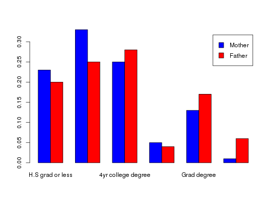

Data for Exercise 1.32
A data frame with 6 observations on the following 3 variables.
4yr college
degree Doctoral degree Grad degree H.S grad or less
Some college Some grad schoolKitchens, L. J. (2003) Basic Statistics and Data Analysis. Duxbury
str(Parented)#> 'data.frame': 6 obs. of 3 variables: #> $ Educat: Factor w/ 6 levels "4yr college degree",..: 4 5 1 6 3 2 #> $ Mother: num 0.23 0.33 0.25 0.05 0.13 0.01 #> $ Father: num 0.2 0.25 0.28 0.04 0.17 0.06 #>attach(Parented)The following object is masked from package:BSDA: EducatMAT <- cbind(Mother, Father) row.names(MAT) <- Educat MAT#> Mother Father #> H.S grad or less 0.23 0.20 #> Some college 0.33 0.25 #> 4yr college degree 0.25 0.28 #> Some grad school 0.05 0.04 #> Grad degree 0.13 0.17 #> Doctoral degree 0.01 0.06 #>barplot(t(MAT),beside=TRUE,legend=TRUE,col=c("blue","red"))detach(Parented) remove(MAT)